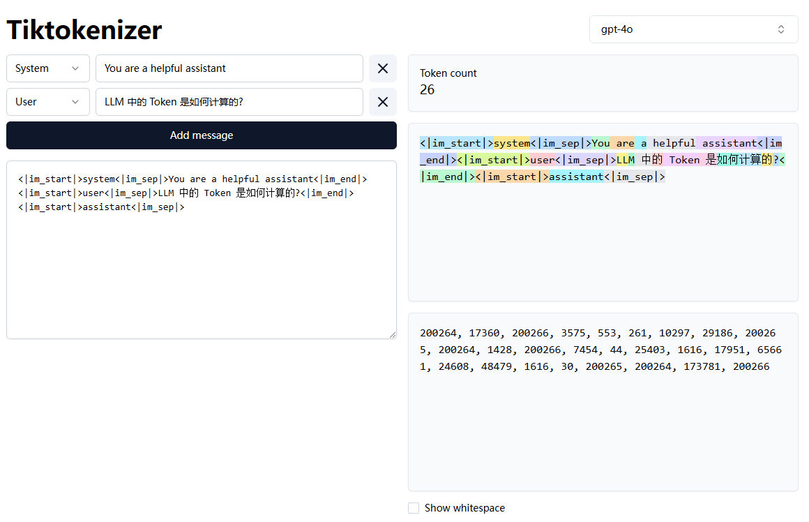

LLM 中的 Token 是如何计算的?
by @karminski-牙医

在大型语言模型 (LLM) 中, Token 是文本处理的基本单元.
如果是开源模型, 可以在模型仓库中找到 tokenizer.json 文件, 里面包含了词汇表和对应的 token 映射关系.
其结构类似：
{
"version": "1.0",
"added_tokens": [
{
"id": 151643,
"content": "<|endoftext|>",
},
...
],
"model": {
"type": "BPE",
"vocab": {
"!": 0,
"\"": 1,
"#": 2,
"$": 3,
"%": 4,
"&": 5,
...
}
}
}其中:
- added_tokens 表示特殊 token (如开始/结束符)
- model.type 表示分词算法, vocab 表示词汇表, key 是 token, value 是 token 的 id.
常见问题
模型是怎样计算 token 使用量的?
- 预处理：将输入文本标准化 (如 Unicode 规范化)
- 分词：使用 tokenizer 的词汇表进行子词切分
- 统计：计算切分后的 token 数量
- 特殊 token：添加系统要求的特殊 token (如开始/结束符)
注意：
- 不同模型的分词器不同 (GPT 用 BPE, BERT 用 WordPiece 等)
- 空格/标点/语言都会显著影响token数量
如果使用大模型 API 写了一个服务, 该怎样计算 token 用量?
- 首先可以尝试搜索模型的 tokenizer, 或者看看有没有已经封装好的库 (比如 OpenAI 的 tiktoken)
- 如果实在找不到, 可以自己测试一下, 估计一个大概的系数来计算, 比如一个汉字算作 2 个 token 等等
模型该怎样与向量数据库结合？
- 文档分块 (使用 token 计数控制块大小)
- Tokenization 处理 (保持与模型使用一致的 token)
- 向量化存储 (建议同时存储原始文本和token信息)
- 检索时通过向量相似度匹配